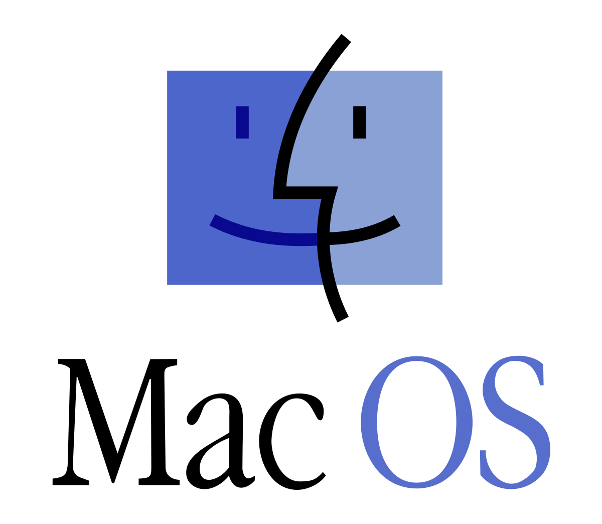
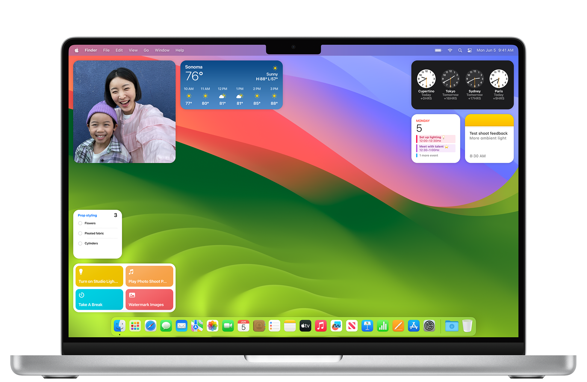
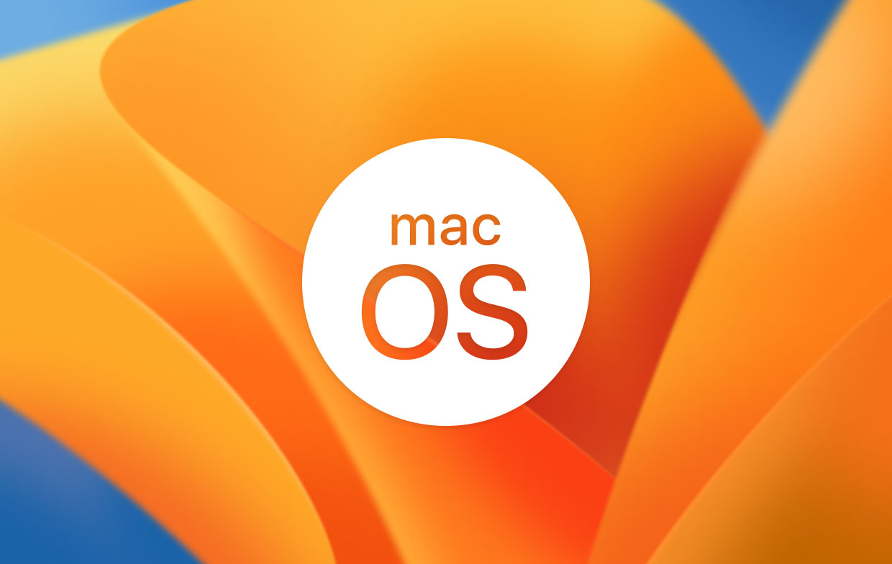

Mac OS
O sistema operacional Macintosh, desenvolvido por Bill Atkinson, Andy Hertzfeld e
influenciado pelo Sketchpad de Ivan Sutherland e pelo sistema on-Line de Doug Engelbart.
Introduziu a "Caixa de Ferramentas", simplificando o desenvolvimento de aplicativos.
A Apple inicialmente ocultou a existência de um sistema operacional, usando termos como
"caixa de ferramentas" para se referir aos seus serviços.
O Mac OS "clássico" é um sistema operacional puramente gráfico, sem linha de comando, conhecido
por sua simplicidade de uso. No entanto, é criticado por sua multitarefa cooperativa, que possui gerenciamento de memória deficiente e é propenso a conflitos de extensão.
Além deintroduzir o Macintosh File System e o Hierarchical File System, o Mac OS revolucionou
a maneira como os arquivos digitais eram armazenados e organizados. Enquanto em sistemas como o DOS ou Unix os arquivos eram tratados como sequências de bytes simples, no Mac OS, eles eram
gerenciados de forma mais estruturada, permitindo uma organização hierárquica e facilitando a
distinção entre diferentes tipos de dados. Isso proporcionou uma experiência de usuário mais
intuitiva e eficiente, ao mesmo tempo em que simplificou o trabalho dos desenvolvedores de
aplicativos para a plataforma Macintosh.
O Mac OS X trouxe melhorias significativas no gerenciamento de memória, inspirado no estilo Unix,
e introduziu a multitarefa preventiva para os usuários de Mac. Isso permitiu a execução simultânea de mais programas e praticamente eliminou conflitos entre eles. Além disso, foi o primeiro sistema
Mac a oferecer uma linha de comando acessível aos usuários, embora geralmente não seja vista a menos
que iniciada por meio de um programa "terminal".
Diversas tecnologias foram incorporadas ao MacOS, como o MultiFinder, QuickDraw, Finder, Chooser, ColorSync,
gerenciamento de memória do Mac OS, acessórios de mesa, PlainTalk e Mac-Roman, para garantir uma experiência de usuário aprimorada e funcionalidades avançadas.